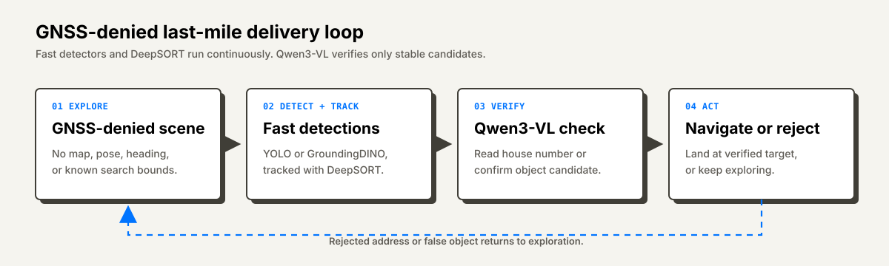
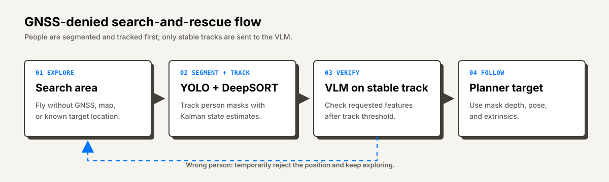

Experience · Avientus
Autonomous Drone Perception Stack
SPRIND Fully Autonomous Flight Challenge 2.0 · Jetson AGX Orin · YOLO · Qwen3-VL · GroundingDINO
During my internship at Avientus, I worked in a three-person team on the complete autonomous drone stack for the SPRIND Fully Autonomous Flight Challenge 2.0. My main responsibility was perception, but the team was small enough that the work was not cleanly separated into isolated perception, planning, and navigation workstreams. I also helped with visual-inertial SLAM using OKVIS2, path-planning and navigation integration, sensor bring-up, ROS 2 message flow, and the practical hardware work needed to make the system fly.
A large part of the project was integration under real drone constraints. Radars were used for collision avoidance, which meant getting CAN-bus communication working, decoding and publishing the radar messages, and making the data usable by the autonomy stack. We also had to design and 3D-print mounts for radars, cameras, and other sensors, wire the hardware, make the Jetson AGX Orin deployment reliable, and keep perception, navigation, planning, and safety components synchronized on the vehicle.
The common constraint across both challenge tasks was GNSS-denied autonomy. The drone had no GNSS position, no known starting pose or heading, no preloaded map, and no fixed environment bounds. It had to explore from scratch, build enough local context to make decisions, and turn semantic task prompts into perception targets that the rest of the autonomy stack could act on.
GNSS-Denied Last-Mile Delivery
The first task was semantic last-mile delivery. A prompt could say something like placing a box in front of the stroller next to house number 35, but the drone did not know where it was, which way it was facing, where the houses were, or where the search area ended. The system therefore had to start in an exploration mode, discover candidate landmarks or objects from live camera images, and only commit to a target after enough evidence had accumulated.
For the address part, I trained a YOLO-based house-number detector from a dataset we collected and annotated ourselves. This model detected the location of house-number signs or number outlines; it was not responsible for reading the digits. That distinction mattered because the detector had to run continuously during exploration and produce candidates fast enough for tracking. The detected boxes were passed into DeepSORT, so the drone could maintain stable tracks and avoid reacting to single-frame false positives.
Only after a house-number track passed a stability threshold did the system leave pure exploration and fly toward the candidate. At that point, Qwen3-VL was used on the cropped sign to read the actual number. If the number matched the prompt, the state machine continued into nearby object search. If it did not match, the location was saved as a rejected address candidate in the map, and the drone returned to exploration to find the next house number.
Object search used the same real-time detection-and-tracking idea. GroundingDINO was necessary because the challenge could ask for arbitrary open-vocabulary objects that were not known ahead of time. When the requested object belonged to one of the 80 COCO classes, the system could fall back to YOLO because it was faster and more reliable for those fixed categories. In both cases, detections were tracked with DeepSORT and only persistent tracks were treated as serious candidates.
The VLM was deliberately kept out of the real-time loop. GroundingDINO produced useful open-vocabulary detections, but it also produced enough false positives that accepting its output directly was too risky. Once an object track passed the threshold, the crop was sent to Qwen3-VL for semantic verification. Only after the VLM confirmed that the tracked object matched the prompt did the system pass the target to the landing behavior.



GNSS-Denied Search And Rescue
The search-and-rescue task used the same GNSS-denied exploration setup, but the semantic target was a person described by visual attributes rather than an address and delivery object. The prompt could ask for a person with features such as a green hat and black jacket. The drone had to explore, detect people in the camera stream, decide whether a candidate matched the description, and then follow the correct person.
The real-time detector was a YOLO segmentation model for people. Each person mask gave a candidate region that was passed into a DeepSORT tracking path, so the system did not need a perfect segmentation in every single frame to keep following a person. The tracker also gave a Kalman-filtered state estimate with position and velocity instead of raw frame-by-frame detections.
A person candidate was only sent to the VLM after its track exceeded a stability threshold. This reduced repeated VLM calls on single-frame false positives and kept the slow semantic check outside the real-time loop. If the VLM confirmed that the candidate matched the requested attributes, the system switched into following. If not, it stored the rejected position only temporarily and commanded a turn so the drone would not immediately inspect the same wrong person again.
The temporary rejection was intentional. People could move, so permanently blacklisting a fixed location would make the drone ignore an area where the target person might later appear. The stored rejected position therefore acted as a short-lived exploration hint rather than a permanent map constraint.
Once the correct person was verified, the segmentation mask stayed useful for following. With the front stereo setup and the depth estimate available from the SLAM/depth pipeline, the system could estimate the person depth inside the mask. Combining that depth with the camera extrinsics and the drone pose from odometry/OKVIS2 gave a target position for the planner, while the DeepSORT/Kalman state smoothed the person motion over time.


The hardest part was making the full perception system run reliably on an NVIDIA Jetson AGX Orin while integrating with the real drone stack. That included model deployment, timing, networking, ROS 2 integration, and ensuring that data arrived without drops. The team advanced from stage 1 to stage 2 and received a EUR 325k award.